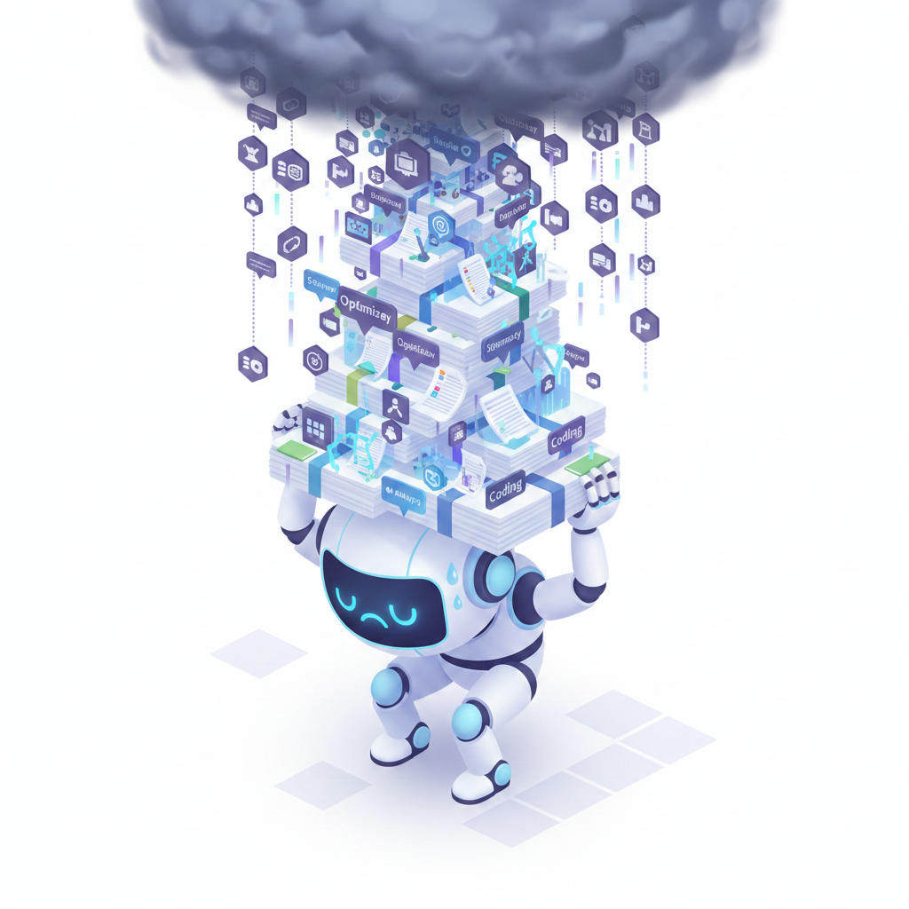
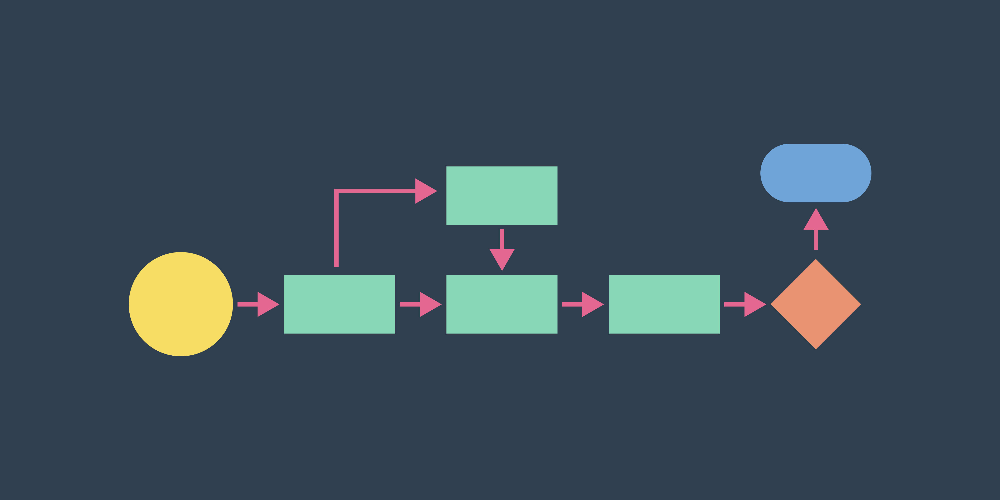
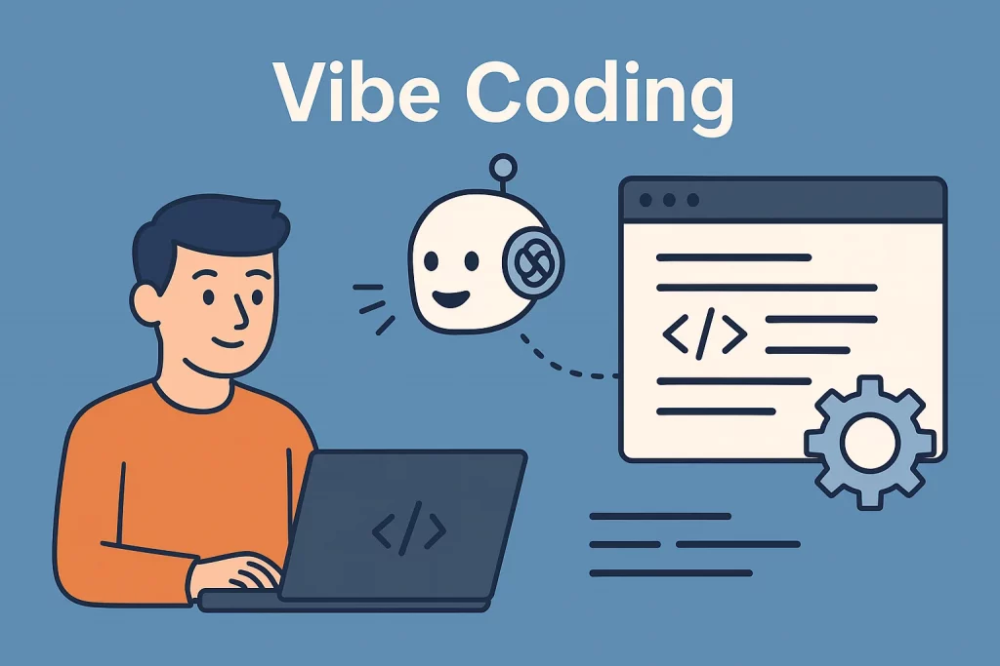
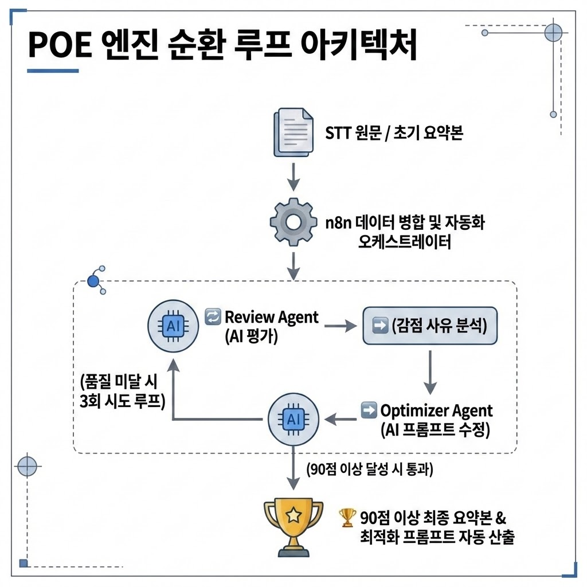

Slide 3
3 / 7
1. 반복적인 수작업의 자동화의 필요성
1. Why POE? (The Problem)

원본 PPT 텍스트/이미지 기반←/→ 이동 · F 전체화면
Slide 5
5 / 7
3. 전문적인 역할 분리를 통해 상호 보안, 작용의 필요성
1. Why POE? (The Problem)


원본 PPT 텍스트/이미지 기반←/→ 이동 · F 전체화면
Slide 6
6 / 7
>
목표
🎯
>
산출물
🚩
Workflow(n8n)
Agents
spec.md
Vibe coding validation
Spec.md
Code
Improved files
1
2
3
4
2. Mission & Outcomes



원본 PPT 텍스트/이미지 기반←/→ 이동 · F 전체화면
Slide 7
7 / 7
1. 프로젝트 개요 ( 🔍 What)
정의:
AI가 사람 대신 요약본을 스스로 평가하고 프롬프트를 수정하는
'자가 개선 엔진(Self-Correction)'
2. 핵심 목표 (🎯 Goal)
평가(Evaluation)→개선(Optimization)→재평가(Loop)를 자동화해
요약 정확도
와
일관성
을 높입니다.
3. 기대 효과 ( 🚀 Impact)
품질 편차를 줄이고
반복 작업을 자동화
하여 업무 속도와 결과 신뢰도를 동시에 개선합니다.
4. 실행 전략 ( 🛠️ How)
100% Vibe Coding:
개발자 하드코딩 없이 AI 프롬프팅으로 아키텍처 자동 생성
n8n 오케스트레이션
으로 에이전트를 연동하며, 90점 기준·최대 3회 루프로 운영합니다.
AI회의록 Squad#2 Prompt Optimizing Engine - POE


원본 PPT 텍스트/이미지 기반←/→ 이동 · F 전체화면